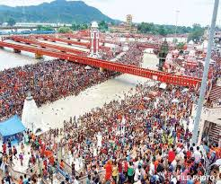
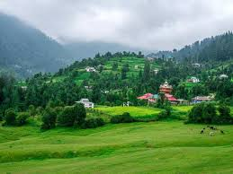
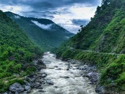

Cities And Places
Dehradun
- Robber's Cave: A natural cave formation offering a unique landscape and a refreshing stream.
- Sahastradhara: A popular tourist spot known for its waterfalls and therapeutic sulphur springs.
- Forest Research Institute: An architectural marvel housing various museums and lush gardens.

- Mindrolling Monastery: One of the largest Buddhist monasteries in the country, featuring stunning architecture and serene gardens.
- Tapkeshwar Temple: A revered temple dedicated to Lord Shiva, set in a tranquil environment along the river.
- Mussoorie: A nearby hill station known for its scenic views, trekking trails, and colonial charm.
Haridwar
- Har Ki Pauri: A sacred ghat on the banks of the Ganges, famous for the Ganga Aarti and taking holy dips.
- Mansa Devi Temple: A revered temple located on a hill, accessible by a cable car, offering panoramic views of the city.
- Chandi Devi Temple: Another important temple dedicated to Goddess Chandi, situated atop Neel Parvat.

- Rajaji National Park: A beautiful national park home to diverse wildlife and scenic landscapes.
- Shantikunj: An ashram dedicated to spiritual and social service, promoting values of peace and harmony.
- Haridwar Kumbh Mela: A major Hindu pilgrimage and festival, attracting millions of devotees every 12 years.
Rishikesh
- Triveni Ghat: A sacred bathing spot at the confluence of three rivers, famous for its evening Ganga Aarti.
- Parmarth Niketan: A renowned ashram offering yoga and meditation classes, with a serene atmosphere.
- Laxman Jhula: An iconic suspension bridge connecting the two banks of the Ganges, offering stunning views.

- Beatles Ashram: An ashram that gained fame after the Beatles visited in the 1960s, known for its graffiti and tranquility.
- Neer Garh Waterfall: A beautiful waterfall located a short trek from Rishikesh, perfect for nature lovers.
- Rafting in Ganges: A popular adventure activity, offering thrilling white-water rafting experiences on the Ganges.
Nainital
- Naini Lake: A stunning natural lake surrounded by hills, ideal for boating and enjoying scenic views.
- Naina Devi Temple: A sacred temple located on the northern shore of Naini Lake, dedicated to Goddess Naina Devi.
- Tiffin Top: A popular trekking spot that offers panoramic views of the surrounding mountains and valleys.

- Snow View Point: Accessible by a cable car, it offers breathtaking views of the snow-capped Himalayas.
- Governor's House: A historical building with beautiful gardens, serving as the official residence of the Governor of Uttarakhand.
- Bhimtal: A serene lake located a short distance from Nainital, perfect for a quiet getaway and boating.
Mussoorie
- Kempty Falls: A popular waterfall surrounded by hills, perfect for picnics and enjoying nature.
- Gun Hill: A viewpoint offering panoramic views of the Himalayan ranges and a cable car ride.
- Lal Tibba: The highest point in Mussoorie, known for its stunning sunrise and sunset views.

- Mussoorie Lake: A beautiful artificial lake offering boating facilities and stunning views of the surrounding hills.
- Camel's Back Road: A scenic walking trail perfect for leisurely walks and enjoying the natural beauty.
- Christ Church: One of the oldest churches in the Himalayas, known for its stunning architecture and peaceful ambiance.
Other Attractions
Ranikhet
- Chaubatia Gardens: A beautiful garden known for its variety of fruits, flowers, and scenic views of the Himalayas.
- Jhula Devi Temple: An ancient temple dedicated to Goddess Durga, famous for its bells and serene atmosphere.
- Rani Jheel: A picturesque lake surrounded by lush greenery, perfect for picnics and leisurely walks.

- Golf Course: A well-maintained golf course set amidst beautiful landscapes, ideal for golf enthusiasts.
- Mankameshwar Temple: A popular temple dedicated to Lord Shiva, offering stunning views and a peaceful atmosphere.
- KRC Museum: A museum showcasing the rich cultural heritage and history of the region.
Almora
- Kasaar Devi Temple: An ancient temple located on a hill, known for its tranquil surroundings and stunning views.
- Almora Fort: A historic fort offering panoramic views of the town and the surrounding mountains.
- Chitai Golu Devta Temple: A famous temple dedicated to Golu Devta, known for fulfilling the wishes of devotees.

- Bright End Corner: A scenic viewpoint offering breathtaking sunsets and views of the surrounding valleys.
- Simtola: A peaceful spot for nature lovers, perfect for picnics and short hikes.
- Kasar Devi Temple: Known for its historical significance and beautiful views, this temple attracts many visitors.
Festivals and Cultural Events
Kumbh Mela in Haridwar
- Overview: Kumbh Mela is one of the largest religious gatherings in the world, held every 12 years in Haridwar.
- Significance: The festival is significant for Hindus as it is believed that taking a dip in the holy Ganges during this time purifies the soul and washes away sins.
- Cultural Events: The Mela features various cultural programs, religious discourses, and traditional music and dance performances.

- Attendees: Millions of pilgrims, sadhus (saints), and tourists gather to participate in the holy dip and various rituals.
- Market Stalls: The area is filled with stalls selling religious artifacts, food, and traditional items, creating a vibrant atmosphere.
- Security and Facilities: Extensive arrangements are made for safety, sanitation, and accommodation to manage the massive influx of visitors.
Ganga Dussehra in Haridwar
- Significance: Ganga Dussehra marks the descent of the Ganga river to Earth, celebrated with great enthusiasm.
- Festivities: Devotees take holy dips in the Ganges, perform rituals, and offer prayers to seek blessings.
- Cultural Events: The festival features spiritual discourses, music, and dance performances along the ghats.

- Timing: Ganga Dussehra is celebrated in the month of Jyeshtha (May-June), lasting for ten days.
- Local Cuisine: Special dishes and sweets are prepared, and prasad is offered to the river.
- Participation: Thousands of pilgrims and tourists gather in Haridwar to partake in the celebrations.
Adventure and Nature Activities
Trekking and Hiking
- Valley of Flowers Trek: A UNESCO World Heritage site, known for its stunning meadows filled with a variety of endemic flowers.
- Roopkund Trek: Famous for its glacial lake and the skeletal remains found at its bottom, this trek offers breathtaking views of the Himalayas.
- Kedarkantha Trek: A popular winter trek, ideal for beginners, featuring panoramic views and beautiful campsites.

- Har Ki Dun Trek: A captivating trek that takes you through ancient villages and lush forests, leading to a beautiful valley.
- Brahmatal Trek: An offbeat trek known for its pristine landscapes, ideal for winter trekking and snowshoeing.
- Chopta Tungnath Trek: A scenic trek to one of the highest Shiva temples, offering spectacular views of the surrounding peaks.
River Rafting
- Location: River rafting in Uttarakhand primarily takes place on the Ganges River, particularly around Rishikesh and Shivpuri.
- Experience: Participants can enjoy thrilling rapids ranging from Grade I to Grade V, making it suitable for both beginners and experienced rafters.
- Best Time to Visit: The ideal time for river rafting is between March and June, and September to November, when water levels are perfect.

- Safety Measures: All rafting trips are conducted with professional guides and safety gear, including helmets and life jackets.
- Additional Activities: Many rafting operators offer package deals that include camping, trekking, and bonfire experiences.
- How to Book: Rafting trips can be booked through local adventure tourism companies or online platforms specializing in adventure activities.